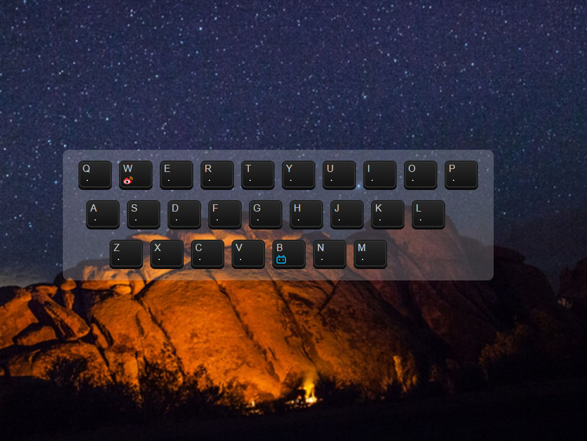
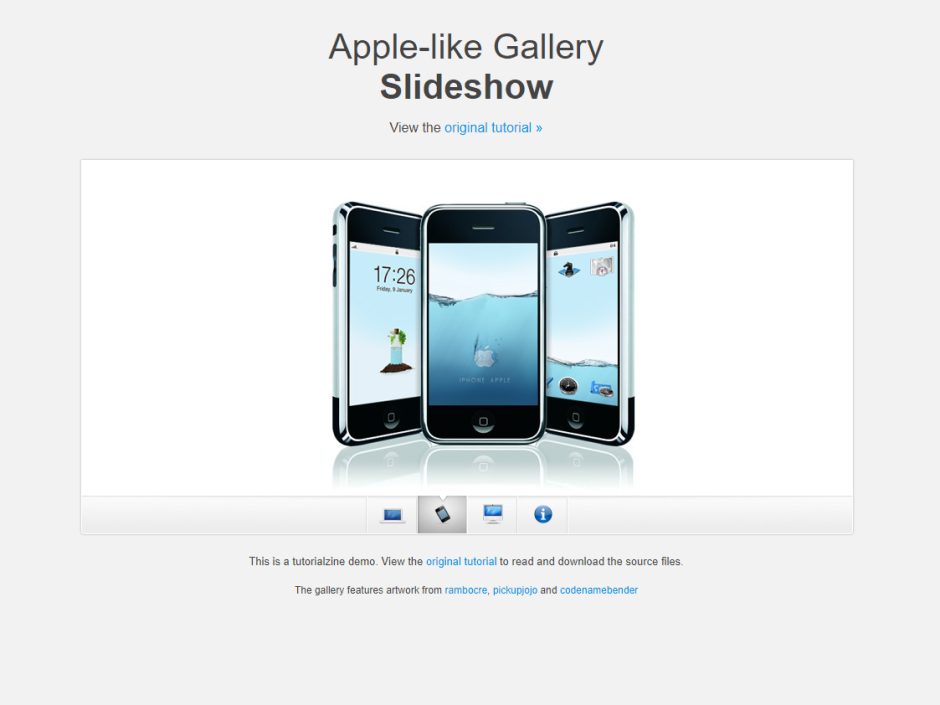

RS
card
关于
技能
作品
作品 1
作品 2
作品 3
博客
博客 1
博客 2
博客 3
日历
联系方式
其他
Hello
文登
学习前端中
年龄
18
所在城市
北京
邮箱
w526529650@outlook.com
手机
18722427710
下载 PDF 简历
我叫文登。
技能
HTML 5 & CSS 3
JavaScript
jQuery
Vue
React
HTTP
作品集
 